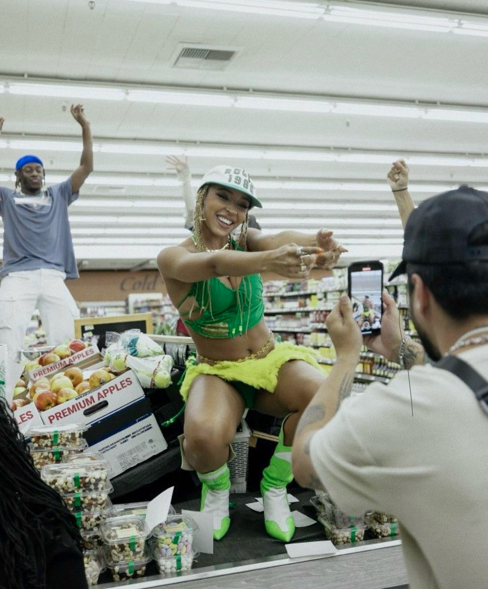
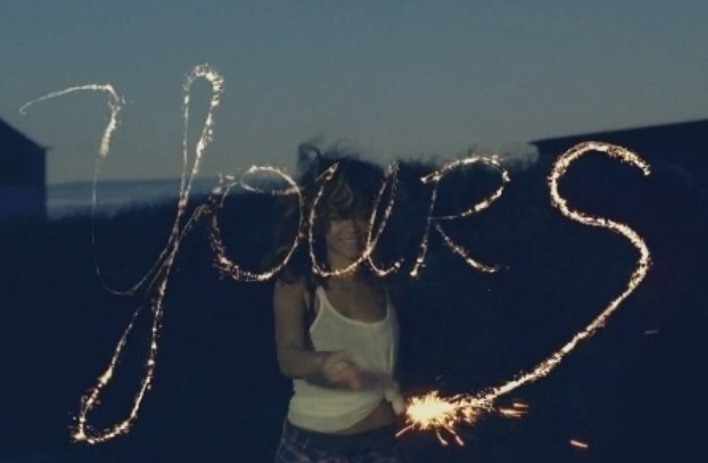
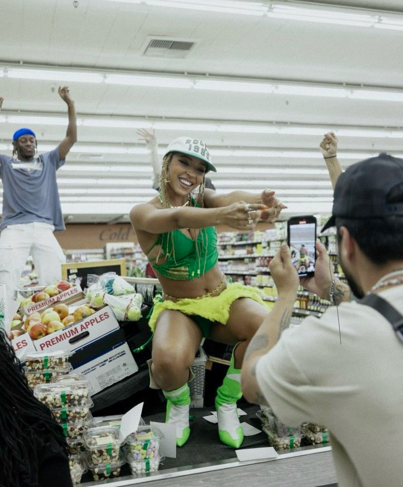
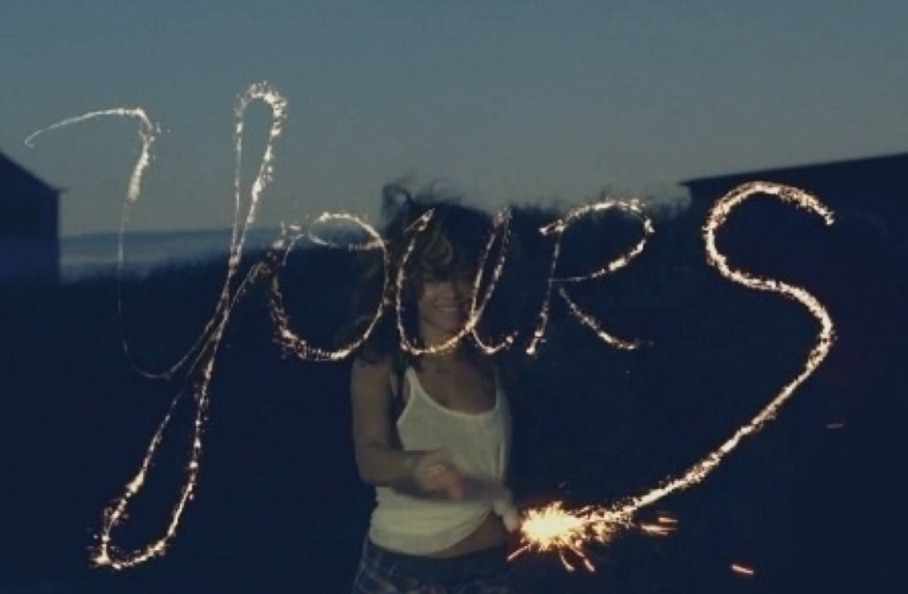
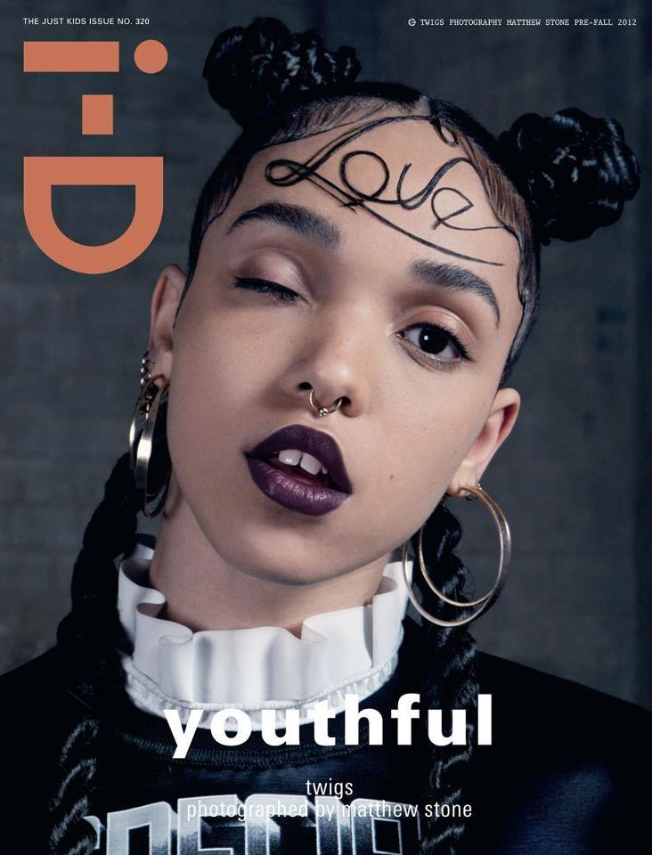
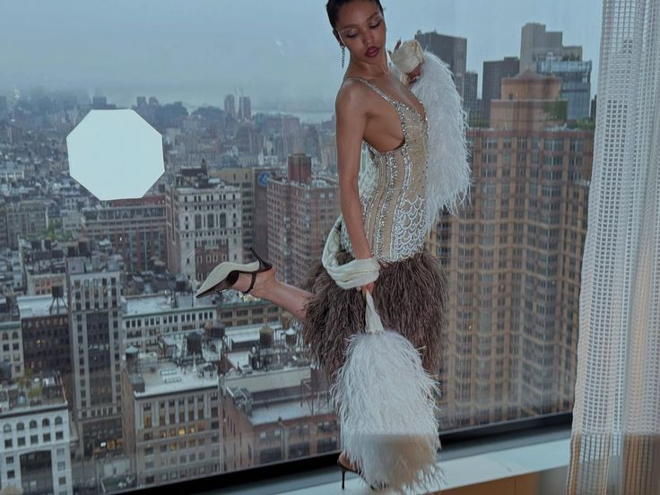
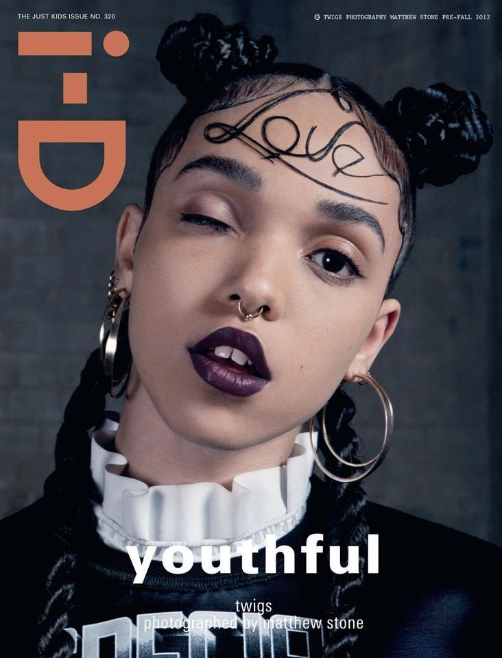
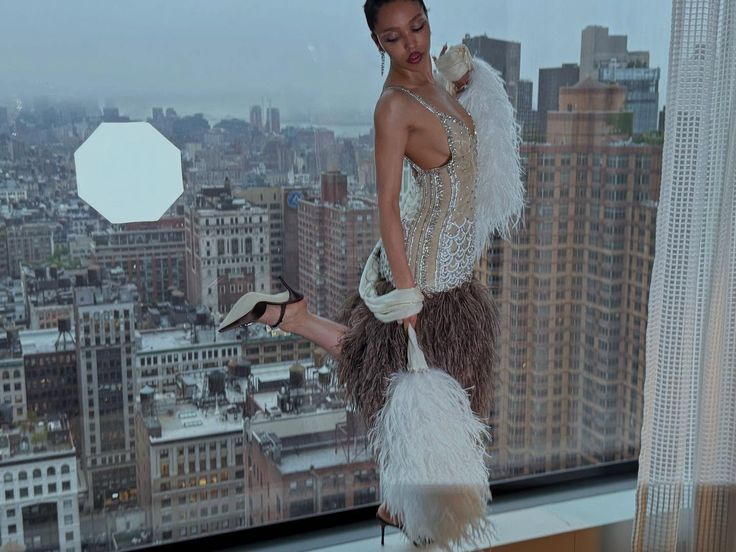
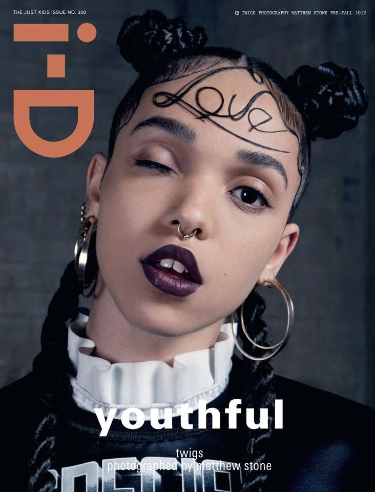
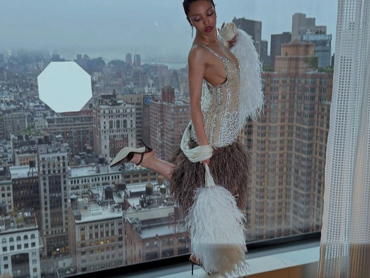

This site is inspired by my discovery of the indie web—a community of people and their personal websites, often used as their own social platforms (see neocities.org !).
The best part is the freedom in building a site that reflects the creator. Naturally, many of them reminiscent of 90s, 2000s or 2010s internet aesthetics.
It's just so playful and endearing to me.
This website is going to document my last summer as a teenager (so I'm going heavy on the 'childish' theme, while still being true to my big age). I'll have a really sweet time capsule for the future!
This is also me actively trying to figure out what path I want to pursue in computer science. I'm enjoying the front-end!
My Favs ♡


 





 





